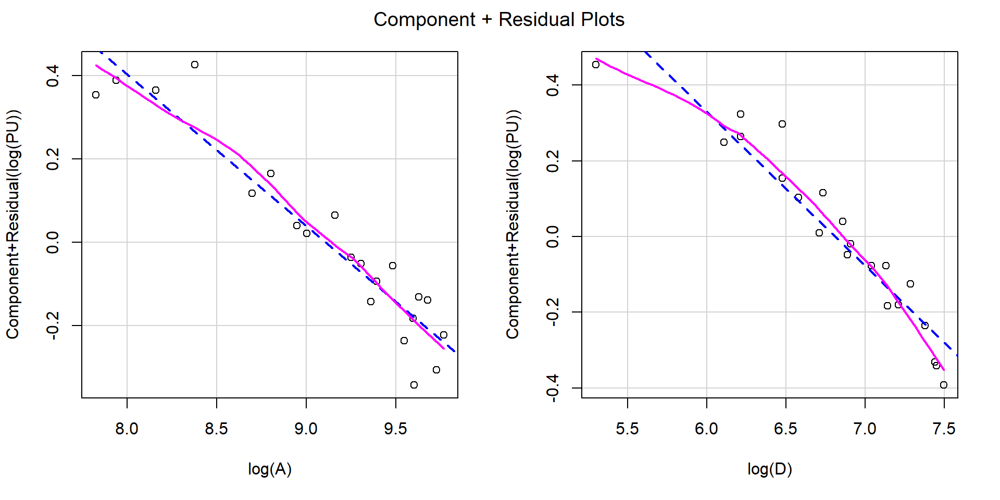

Avaliação em Massa
Fatores
Academia da Engenharia de Avaliações
28 de julho de 2025
Exemplo 1
Modelo
Call: lm(formula = log(PU) ~ log(A) + log(D), data = dados)
Coefficients:
Estimate Std. Error t value Pr(>|t|)
(Intercept) 10.95401 0.34272 31.96 < 2e-16 ***
log(A) -0.36349 0.02901 -12.53 2.50e-10 ***
log(D) -0.40761 0.03164 -12.88 1.59e-10 ***
---
Signif. codes: 0 '***' 0.001 '**' 0.01 '*' 0.05 '.' 0.1 ' ' 1
Residual standard deviation: 0.07774 on 18 degrees of freedom
Multiple R-squared: 0.9468
F-statistic: 160.2 on 2 and 18 DF, p-value: 3.413e-12
AIC BIC
-42.92 -38.75 Resíduos Parciais
Novo Modelo
Call: lm(formula = log(PU) ~ log(A) + D, data = dados)
Coefficients:
Estimate Std. Error t value Pr(>|t|)
(Intercept) 8.54331250 0.18625876 45.87 < 2e-16 ***
log(A) -0.34773547 0.02029311 -17.14 1.36e-12 ***
D -0.00049622 0.00002621 -18.93 2.48e-13 ***
---
Signif. codes: 0 '***' 0.001 '**' 0.01 '*' 0.05 '.' 0.1 ' ' 1
Residual standard deviation: 0.05436 on 18 degrees of freedom
Multiple R-squared: 0.974
F-statistic: 337 on 2 and 18 DF, p-value: 5.453e-15
AIC BIC
-57.95 -53.77 Centralização de Dados
- Uma opção para melhorar a interpretação dos modelos é a centralização de dados em relação a um imóvel paradigma
Modelo Centralizado
Call: lm(formula = log(PU) ~ log(A/11000) + I(D - 980), data = dados)
Coefficients:
Estimate Std. Error t value Pr(>|t|)
(Intercept) 4.82110852 0.01259858 382.67 < 2e-16 ***
log(A/11000) -0.34773547 0.02029311 -17.14 1.36e-12 ***
I(D - 980) -0.00049622 0.00002621 -18.93 2.48e-13 ***
---
Signif. codes: 0 '***' 0.001 '**' 0.01 '*' 0.05 '.' 0.1 ' ' 1
Residual standard deviation: 0.05436 on 18 degrees of freedom
Multiple R-squared: 0.974
F-statistic: 337 on 2 and 18 DF, p-value: 5.453e-15
AIC BIC
-57.95 -53.77 - \(\overline{PU}_{Hom} = \exp(\hat\beta_0) = \exp(4,82) \approx 127,0 \text{ R\$/m^2}\)
Dedução de Fatores
- \(\widehat{\ln(PU)} = 4,82 -0,348 \ln(A/11.000) - 0,0005 (D - 980)\)
- \(\widehat{PU} = \exp[4,82 - 0,348\ln(A/11.000) - 0,0005 (D - 980)]\)
- \(\exp(x_1 + x_2 + \ldots + x_n) = \exp(x_1)\cdot \exp(x_2) \cdot \ldots \cdot \exp(x_n)\)
- \(\widehat{PU} = \exp[4,82)\cdot\exp[- 0,348\ln(A/11.000)]\cdot \exp[- 0,0005 (D - 980)]\)
- \(\exp(k\cdot x) = \exp(x)^k = \exp(k)^x\)
- \(\widehat{PU} = 128\cdot(A/11.000)^{-0,348}\cdot \exp(-0,0005)^{(D - 980)}\)
- \(\widehat{PU} = 128\cdot(A/11.000)^{-0,348}\cdot 0,9995^{(D - 980)}\)
- \(\widehat{PU} = 128\cdot F_S^\cdot F_D\)
- \(F_S = (A/11.000)^{-0,348}\)
- \(F_D = 0,9995^{(D - 980)}\)
- Ver no Excel
Exemplo 2
Modelo Final
fit11 <- lm(log(PU) ~ log(Lot) + log(SqFeet) + log1p(Age) + Quality + Pool +
Style + Baths,
data = homePrices, subset = -c(11, 24, 86, 104, 202, 513))
S(fit11)Call: lm(formula = log(PU) ~ log(Lot) + log(SqFeet) + log1p(Age) + Quality +
Pool + Style + Baths, data = homePrices, subset = -c(11, 24, 86, 104, 202,
513))
Coefficients:
Estimate Std. Error t value Pr(>|t|)
(Intercept) 5.433029 0.373261 14.556 < 2e-16 ***
log(Lot) -0.873500 0.018130 -48.180 < 2e-16 ***
log(SqFeet) 0.816476 0.047664 17.130 < 2e-16 ***
log1p(Age) -0.121883 0.012511 -9.742 < 2e-16 ***
QualitySegunda -0.233921 0.027732 -8.435 3.48e-16 ***
QualityTerceira -0.288248 0.038072 -7.571 1.77e-13 ***
Pool 0.115856 0.028669 4.041 6.15e-05 ***
Style -0.016376 0.003633 -4.507 8.17e-06 ***
Baths 0.049265 0.011408 4.318 1.89e-05 ***
---
Signif. codes: 0 '***' 0.001 '**' 0.01 '*' 0.05 '.' 0.1 ' ' 1
Residual standard deviation: 0.1568 on 506 degrees of freedom
Multiple R-squared: 0.9015
F-statistic: 579.1 on 8 and 506 DF, p-value: < 2.2e-16
AIC BIC
-436.04 -393.60 Equação de Estimação
Equação de Estimação
- A equação de regressão para o modelo final adotado é:
- \[\begin{aligned} \ln(PU) = 5,43 - 0,87\ln(Lot) + 0,82\ln(SqFeet) - \\ 0,12\ln(1 + Age) - 0,23\cdot\text{Quality2ª} - 0,29\cdot\text{Quality3ª} + \\ 0,12\cdot\text{Pool}-0,016\cdot Style + 0,05\cdot Baths \end{aligned} \]
- Exponenciando ambos os lados, chegamos à equação de estimação:
\[\begin{aligned} PU = \exp[5,43 - 0,87\ln(Lot) + 0,82\ln(SqFeet) - \\ 0,12\ln(1 + Age) - 0,23\cdot\text{Quality2ª} - 0,29\cdot\text{Quality3ª} + \\ 0,12\cdot\text{Pool}-0,016\cdot Style + 0,05\cdot Baths] \end{aligned} \]
\[ \begin{aligned} PU = \exp(5,43)\cdot\exp(-0,87\ln(Lot))\cdot\exp(0,82\ln(SqFeet)) \\ \exp(-0,12\ln(1 + Age))\cdot \exp(- 0,23\cdot\text{Quality2ª}) \cdot \\ \exp(- 0,29\cdot\text{Quality3ª}) \cdot \exp(0,12\cdot\text{Pool}) \\ \cdot\exp(-0,016\cdot Style) \cdot\exp(0,05\cdot Baths) \end{aligned} \]
Equação de Estimação
Pode-se melhorar a apresentação da equação de estimação através da simplificação dos termos
Lembrando que \(\exp(k\cdot x) = \exp(x)^k\), então:
- \(\exp[-0,87\cdot \ln(Lot)] = \exp[\ln(Lot)]^{-0,87} = Lot^{-0,87}\)
- \(\exp[0,82\cdot \ln(SqFeet)] = \exp[\ln(SqFeet)]^{0,82} = SqFeet^{0,82}\)
- \(\exp[-0,12\cdot \ln(1 + Age)] = \exp[\ln(1 + Age)]^{-0,12} = (1+Age)^{-0,12}\)
Outra opção é: \(\exp(k\cdot x) = \exp(k)^x\). Então:
- \(\exp(-0,23\cdot\text{Quality2ª}) = 0,79^{\text{Quality2ª}}\)
- \(\exp(-0,29\cdot\text{Quality3ª}) = 0,75^{\text{Quality3ª}}\)
- \(\exp(0,12\cdot\text{Pool}) = 1,13^{\text{Pool}}\)
- \(\exp(-0,016\cdot Style) = 0,985^{Style}\)
- \(\exp(0,05\cdot Baths) = 1,05^{Baths}\)
Equação de Estimação
\[ \begin{aligned} PU = 228,15\cdot Lot^{-0,87}\cdot\ SqFeet^{0,82}\cdot (1 + Age)^{-.12} \cdot 0,79^{\text{Quality2ª}} \cdot\\ 0,75^{\text{Quality3ª}} \cdot 1,13^{\text{Pool}} \cdot 0,985^{Style} \cdot 1,05^{Baths} \end{aligned} \]
Interpretação:
- Cada Banheiro aumenta PU em 5%
- A var. estilo da residência diminui 1,5% a cada subida nível
- Uma piscina aumenta PU em 13%
- Uma casa de baixo padrão de acabamento vale 25% menos
- Uma casa de médio padrão de acabamento vale 21% menos
- Cada 1% de aumento na idade da residência diminui PU em 0,12%
- Cada 1% de aumento na área construída aumenta PU em 0,82%
- Cada 1% de aumento na área do lote diminui PU em 0,87%
Centralização de Dados
Centralização de Dados
[1] 22003[1] 1592[1] 3- Suponhamos então uma casa paradigma com as seguintes características:
- Lot: 22.000
- SqFeet: 1.600
- Age: 0
- Quality: Primeira
- Pool: 0
- Style: 1
- Baths: 3
Centralização dos Dados
fitCenter <- lm(log(PU) ~ log(Lot/22000) + log(SqFeet/1600) + log1p(Age) + Quality +
Pool + I(Style-1) + I(Baths-3),
data = homePrices, subset = -c(11, 24, 86, 104, 202, 513))
S(fitCenter)Call: lm(formula = log(PU) ~ log(Lot/22000) + log(SqFeet/1600) + log1p(Age) +
Quality + Pool + I(Style - 1) + I(Baths - 3), data = homePrices, subset =
-c(11, 24, 86, 104, 202, 513))
Coefficients:
Estimate Std. Error t value Pr(>|t|)
(Intercept) 2.854267 0.043870 65.062 < 2e-16 ***
log(Lot/22000) -0.873500 0.018130 -48.180 < 2e-16 ***
log(SqFeet/1600) 0.816476 0.047664 17.130 < 2e-16 ***
log1p(Age) -0.121883 0.012511 -9.742 < 2e-16 ***
QualitySegunda -0.233921 0.027732 -8.435 3.48e-16 ***
QualityTerceira -0.288248 0.038072 -7.571 1.77e-13 ***
Pool 0.115856 0.028669 4.041 6.15e-05 ***
I(Style - 1) -0.016376 0.003633 -4.507 8.17e-06 ***
I(Baths - 3) 0.049265 0.011408 4.318 1.89e-05 ***
---
Signif. codes: 0 '***' 0.001 '**' 0.01 '*' 0.05 '.' 0.1 ' ' 1
Residual standard deviation: 0.1568 on 506 degrees of freedom
Multiple R-squared: 0.9015
F-statistic: 579.1 on 8 and 506 DF, p-value: < 2.2e-16
AIC BIC
-436.04 -393.60 - Todos os coeficientes são idênticos, exceto pelo intercepto, que agora vale:
- \(\exp(2,85) = \overline{PU}_{Hom} =\) 17,36 US$/sqft
Derivação de Fatores
Derivação de Fatores
- Com o modelo centralizado, fica mais fácil inferir fatores de homogeneização e utilizá-los:
- Por exemplo:
- Fator Área do Lote (\(S\)): \(F_S = \left(\frac{S}{22.000}\right)^{-0,87}\)
- Por exemplo:
- Demonstração:
Derivação de Fatores
- Para avaliar, fazemos:
- \[PU_{aval} = \overline{PU}_{Hom}\cdot F_1 \cdot F_2 \ldots F_k\]
- Utilizando fatores, a predição do exemplo anterior, para um lote com 24.200 \(m^2\), fica::
- \(F_S = \left(\frac{S}{22.000}\right)^{-0,87} = \left(\frac{24.200}{22.000}\right)^{0,87} = 1,1^{-0,87} = 0,92\)
- \(PU_{aval} = \overline{PU}_{Hom}\cdot F_S = 17,36\cdot 0,92 = 15,97\text{ US\$/sqft}\)
- As avaliações realizadas com fatores fundamentados são “exatas” em todo o domínio de validade do modelo!
Homogeneização
Homogeneização
- Para homogeneizar faremos:
- \[PU_{Hom_i} = \frac{PU_{Obs}}{F_1 \cdot F_2 \ldots F_k}\]
- A ideia é:
- Ao observar um dado constatamos que seu \(PU_i = 16,25\text{ US\$/sqft}\)
- Este lote possui as mesmas características de um lote padrão, exceto pela sua área, que é 10% maior (24.200 sqft)
- Qual seria o preço observado desde dado amostral se ele tivesse a mesma área do lote padrão?
- \[PU_{Hom} = \frac{16,25}{\left (\frac{22.400}{22.000} \right )^{-0,87}} = \frac{16,25}{0,94} = 17,28\text{ US\$/sqft}\]
Por que homoegeneizar a amostra?
- Se já temos ajustado um modelo de regressão com o qual conseguimos prever valores dentro ou fora da amostra
- Por que homoegeneizar os dados amostrais?
- A resposta é que, com todos a amostra homogeneizada para as mesmas características, se esta amostra conta com coordenadas geográficas, então o que temos é uma variável regionalizada
- Não podíamos comparar os \(PU_i\) dos imóveis entre si diretamente, pois estes \(PU_i\) se referiam à imóveis com diferentes características
- Seria equivalente a coletar o preço do kilo da laranja em um mercado, da banana em outro, do abacaxi em um terceiro, e depois tratar esses preços espacialmente, como se eles se referissem à mesma coisa
- Porém, como conseguimos homogeneizar os dados em relação a um conjunto único de características (as características de um imóvel paradigma), então podemos trabalhá-los espacialmente
- Não podíamos comparar os \(PU_i\) dos imóveis entre si diretamente, pois estes \(PU_i\) se referiam à imóveis com diferentes características
Problema
- Só restou um problema:
- Esta homogeneização que fizemos é válida?
- Os nossos coeficientes foram estimados apropriadamente?
- Esta homogeneização que fizemos é válida?
- Todo o processo de homogeneização deve ser realizado com tratamento científico
- Os fatores utilizados devem ser derivados de maneira racional, através de um modelo RLM
- No entanto, não consideramos quaisquer variáveis de localização no modelo
- Se os dados forem dependentes espacialmente, os nossos coeficientes poderão estar viesados
- Nossos fatores podem estar errados
- É preciso considerar a verificação da dependência espacial, muito comum no mercado imobiliário
Referências

VALORÍSTICA